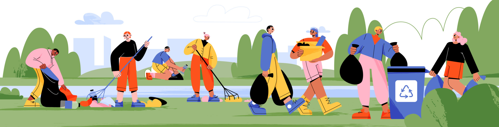
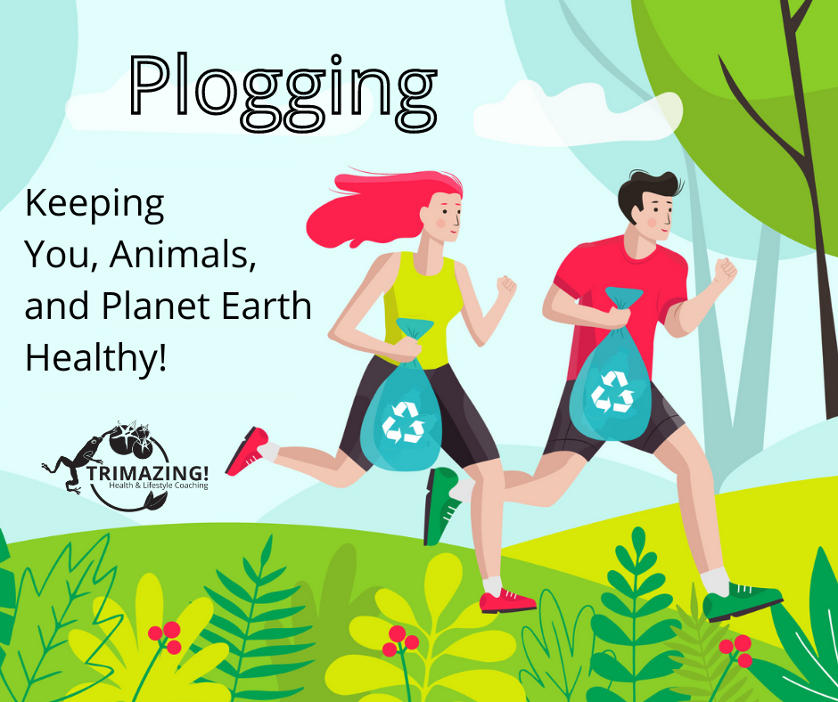
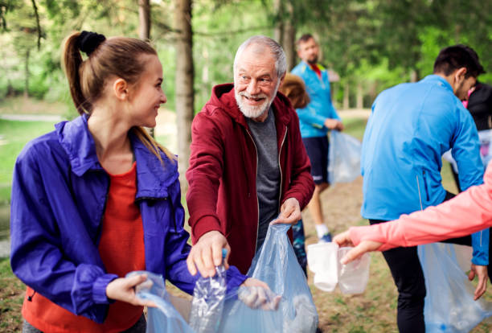
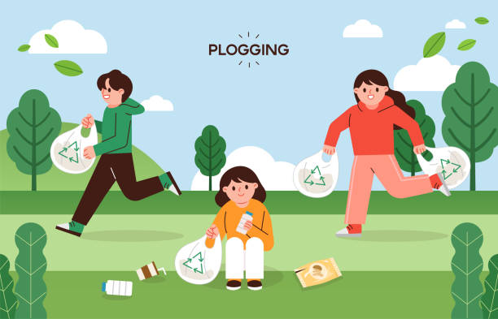

Plogging is the activity of picking up trash while jogging. It was popularized in Sweden as a way to remain active while cleaning up your enviorment. Plogging originates from the Swedish word "Plogga," meaning to jog in Swedish. Plogging can be done by doing any activity, such as walking, running, or hiking just needs to include cleaning the environment!


Many people see litter in their community as gross and not their problem, leading to the trash piling up. As a way to take agency, people have begun Plogging to provide a safe and clean environment for themselves and all the other creatures that inhabit the space.
Through the creation of Clean Sweep we want to facilitate communities to track their progress of trash collection with leaderboards and encourage connection amongst people. On a week by week basis, our friends tab allows you to compare your trash collections and activity times score against your friends and family! Through little day to day action, watch as your community empowers itself to become a leader in litter removal.
